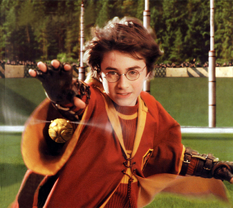

malfoyTHEdeatheater
Harry!
malfoyTHEdeatheater
Hast du wirklich meinen Zauberstab gefunden?

Du:
Wie sieht er denn aus?
malfoyTHEdeatheater
Er ist drei ein Viertel Zoll lang.
malfoyTHEdeatheater
Ist schwarz und besteht aus Elfenholz mit einem Ahornkern.
Du:
Dann scheint es wirklich deiner zu sein.
Du:
Ich habe ihn in meiner Kiste im Schlafsaal.
Ich gebe ihn dir nach dem Essen im Speisesaal wieder. Passt das?
malfoyTHEdeatheater
Ist in Ordnung.